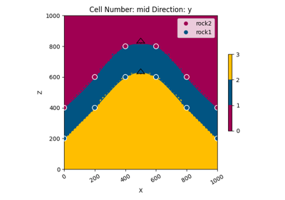
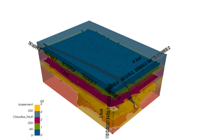

gempy.core.data.GeoModel¶
- class gempy.core.data.GeoModel(name: str, structural_frame: StructuralFrame, grid: Grid, interpolation_options: InterpolationOptions)[source]¶
Class representing a geological model.
Examples using
gempy.core.data.GeoModel¶
Video Tutorial “code-along”: Modeling step by step
Video Tutorial "code-along": Modeling step by stepModel 2 - AnticlineGeomodeling benchmark: the “Claudius”-Model
Geomodeling benchmark: the "Claudius"-Model
Unknown Model: Importing Borehole Data and Building a 3D Geological Model with GemPy
Unknown Model: Importing Borehole Data and Building a 3D Geological Model with GemPyMethods
__init__(name, structural_frame, grid, ...)add_surface_points(X, Y, Z, surface[, nugget])update_transform([auto_anisotropy, ...])Update the transformation of the geological model.
Attributes
extent_transformed_transformed_by_inputThe geophysics input of the geological model.
input_data_descriptorThe transformation used in the geological model for input points.
Optional grid used for interpolation.
interpolation_input_copyinterpolation_optionsLegacy model (if available).
orientationsThis is a copy! Returns a OrientationsTable for all orientations across the structural elements
orientations_copy_transformedproject_boundsregular_grid_coordinatesregular_grid_coordinates_transformedsolutionssurface_pointsThis is a copy! Returns a SurfacePointsTable for all surface points across the structural elements
surface_points_copy_transformedMeta-information about the geological model, like its name, creation and modification dates, and owner.
The structural information of the geological model.
The general grid used in the geological model.
- geophysics_input: GeophysicsInput = None¶
The geophysics input of the geological model.
- interpolation_grid: EngineGrid = None¶
Optional grid used for interpolation. Can be seen as a cache field.
- legacy_model: gpl.Project = None¶
Legacy model (if available). Allows for backward compatibility.
- __init__(name: str, structural_frame: StructuralFrame, grid: Grid, interpolation_options: InterpolationOptions)[source]¶
- meta: GeoModelMeta¶
Meta-information about the geological model, like its name, creation and modification dates, and owner.
- structural_frame: StructuralFrame¶
The structural information of the geological model.
- input_transform: Transform = None¶
The transformation used in the geological model for input points.
- update_transform(auto_anisotropy: GlobalAnisotropy = GlobalAnisotropy.NONE, anisotropy_limit: ndarray | None = None)[source]¶
Update the transformation of the geological model.
This function updates the transformation of the geological model using the provided surface points and orientations. It also applies anisotropy based on the specified type and limit.
- Parameters:
auto_anisotropy (GlobalAnisotropy) – The type of anisotropy to apply. Defaults to GlobalAnisotropy.NONE.
anisotropy_limit (Optional[np.ndarray]) – Anisotropy limit values. If None, no limit is applied.
- property surface_points_copy¶
This is a copy! Returns a SurfacePointsTable for all surface points across the structural elements
- property orientations_copy: OrientationsTable¶
This is a copy! Returns a OrientationsTable for all orientations across the structural elements